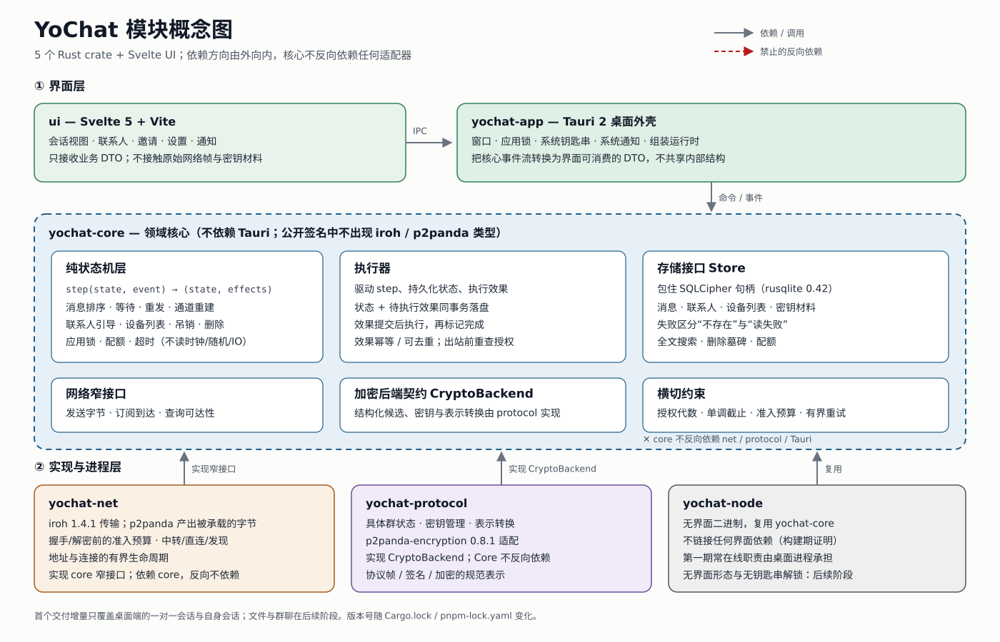
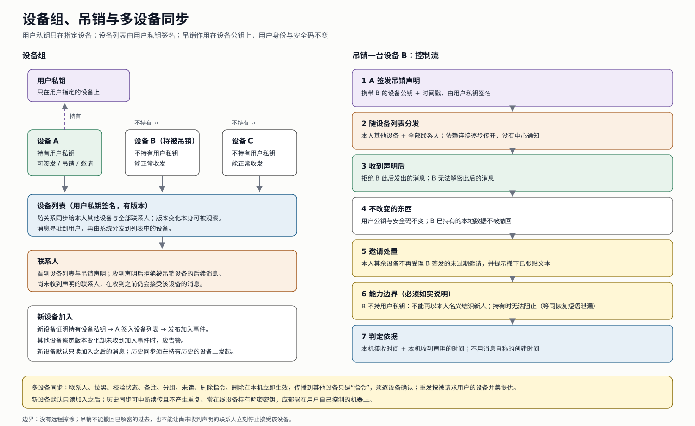
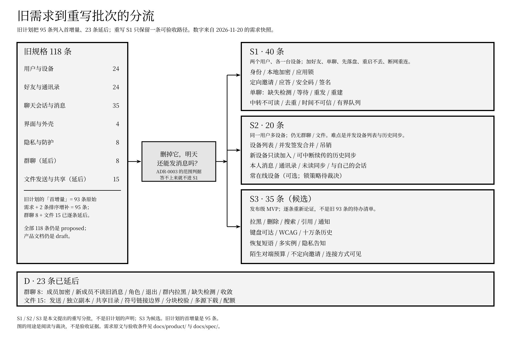

flw
YoChat 模块概念图
五个 Rust crate 与 Svelte UI 的职责和依赖方向。
点击查看大图YoChat · reference study
先弄清旧项目做到了哪，再判断 118 条需求里哪些真的要在 MVP 做。阅读页把设计图与 Markdown 放在同一个离线入口里；点击看大图，Esc 退出。
前六张来自 flw 的阅读包；最后一张是本页的分析图。

五个 Rust crate 与 Svelte UI 的职责和依赖方向。
点击查看大图
纯状态机、执行器与适配器的分层，以及状态与效果同事务、提交后执行、再标记完成的顺序。
点击查看大图
从界面撰写到核心状态推进、同事务落盘、加密发送、对方接收与确认的完整路径。
点击查看大图
入站数据经过准入、解密、去重与定序；缺口进入等待，并通过请求重发、兜底重发、通道重建或可验证声明放行。
点击查看大图
A 生成邀请，经外部渠道传给 B；B 生成加密应答回传；A 在签发设备确认并发出首条认证操作；双方再做安全码带外比对。
点击查看大图
用户私钥只存在于指定设备；设备列表由用户私钥签名并分发；吊销声明只影响设备公钥，不影响用户身份与安全码。
点击查看大图
旧规格 118 条需求中，95 条曾被列入首个交付增量，23 条明确延后。重写建议把 95 条分为 S1 40 条、S2 20 条、S3 35 条；S1 只保留两台设备、各一台、加好友与单聊的一条可验收路径。此图是阅读分析，不是旧项目的范围声明。
点击查看大图图是阅读辅助，不是规格或验收证据。flw 的六张图原样引用；要改它们，去 ../2026-11-20-flw-yochat-diagrams/notes/。
建议顺序：现状 → 需求分期 → 术语 → 说明。
对象：~/projects/yochat-reference（2026-11-20 的只读副本）需求快照：本仓 docs/spec/方法：读 docs/product、docs/engineering、主计划与验证摘要；数 Rust / Quint / 测试；不把任务勾选当产品验收。结论：功能停在…
129 行 · 点击阅读对象：旧实现 docs/product/ 的 118 条需求；重写侧对照 docs/adr/0003-v1-scope.md 与 0004-test-parity-and-performance-gates.md。结论先行：不是所有需求都要在 MVP 做。 旧计划的「首增量 93 条」是范围声明，…
289 行 · 点击阅读完整版：旧项目 docs/glossary.md（411 行，术语 + 缩写）；flw 的阅读版在 ../2026-11-20-flw-yochat-diagrams/notes/glossary.md。本表只收读需求与设计时最容易混的词，并标出重写 S1 / S2 / S3 的对应关系。定义以旧…
106 行 · 点击阅读这组文档是对旧实现 ~/projects/yochat-reference 的外部阅读，用于回答三个问题：
86 行 · 点击阅读本页由 build.py 生成；Markdown 与 SVG 在构建时嵌入或按相对路径引用，不依赖 CDN 或本地服务器。